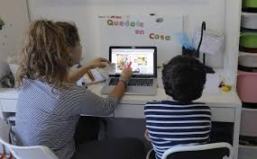

La llegada del coronavirus a Ecuador ha provocado un "salto a otra dimensión" en temas educativos al llevar a paso forzado a profesores, estudiantes y padres de familia al mundo de la tecnología, en un país donde muchos hogares no tienen ni internet ni ordenadores.
Un salto a otra dimensión
Los nuevos mecanismos han puesto contra la pared no solo a quienes no tienen acceso a la tecnología, sino a familias, docentes, estudiantes" que tuvieron que navegar en una nueva forma de comunicación.